这一份报告回答什么：应用看到的机器，与命令行一致吗？
NVIDIA App 不显示 CUDA 版本，也不做性能测试；它的价值是把你平时在设置页里能看到的东西固定下来。以下五点是本页最值得带走的结论。
- ✓驱动与平台一致 我的装备页与驱动程序页都报 621.40（2026-11-24）；系统为 Windows 11 专业版 10.0.28000。与 nvidia-smi 的 621.40 / KMD 621.40 / CUDA UMD 13.5 对得上
- ✓专用显存两处互证 详情页“专用视频内存 31232 MB”与高级页“专用 GPU 显存 30.50 GB”完全一致（31,232 MiB ÷ 1024 = 30.50 GiB）。这是本站内存部分反复使用的 30.50 GiB 分区口径
- ✓图形内存是一组划分 专用 31,232 MB + 共享 16,477 MB = 全部可用 47,709 MB。三者是划分关系，不可与整机 64.0 GB 相加。47,709 MB 也不是 47.7 GB 的物理内存
- ✓显示链路是 HDMI 电视型 TF2415 以 HDMI - HDTV 接入，1080p / 60 Hz / 8 bpc / 全范围；G-SYNC 与 Surround 均不可用。缩放预览里的 75 Hz 是下拉框选中项，不是实际输出
- ✓图形设置全是默认 17 项驱动设置全部为出厂默认或“使用 3D 应用程序设置”；程序列表 0/0，没有为任何游戏建立单独配置。这与“这台机器主要不是拿来打游戏”的定位一致
边界：本报告不测帧率、不测算力、不做驱动对比。性能页读数是 12:48:26 的瞬时值，重开页面会变；引用时应写明“某一时刻”，不能当固定配置。
配置速览：应用内读数
| 类别 | 项目 | 应用内读数 |
|---|---|---|
| 硬件 | 处理器 | NVIDIA RTX Spark N1X |
| 硬件 | 显卡 | NVIDIA RTX Spark N1X（6144-core Blackwell RTX GPU） |
| 硬件 | 内存 | 64.0 GB（即 64 GiB） |
| 硬件 | 存储 | SSD - 1.9 TB（2 TB 厂商标称 ≈ 1.86 TiB） |
| 硬件 | 显示 | TF2415，1920 × 1080（本机），60 Hz，32 位色深，HDCP 支持 |
| 硬件 | 专用视频内存 | 31232 MB（高级页显示为 30.50 GB） |
| 硬件 | 共享系统内存 | 16477 MB |
| 硬件 | 全部可用的图形内存 | 47709 MB |
| 软件 | 操作系统 | Microsoft Windows 11 专业版，版本 10.0.28000 |
| 软件 | 图形接口 | DirectX 12 运行时，Direct3D 功能级别 12_1 |
| 软件 | 显卡驱动 | Game Ready 驱动程序 621.40（2026-11-24） |
| 软件 | NVIDIA App | 11.0.10.136（© 2026 NVIDIA Corporation） |
| 软件 | 视频 BIOS | 9a.0b.37.00.04 |
说明：上表“专用视频内存”与“共享系统内存”是统一内存架构下的两种划分口径，二者相加正好等于“全部可用的图形内存”（31232 + 16477 = 47709 MB），不可与整机 64.0 GB 相加或混用。
系统 › 我的装备：整机配置总览
页面按六组给出整机配置；其中“显卡和显示器”一组同时列出 GPU 型号与所接显示器的分辨率、刷新率、色深与 HDCP 状态。
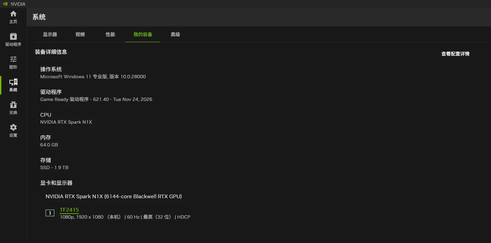
| 分组 | 属性 | 读数 |
|---|---|---|
| 操作系统 | 系统版本 | Microsoft Windows 11 专业版，版本 10.0.28000 |
| 驱动程序 | 版本与日期 | Game Ready 驱动程序 - 621.40 - Tue Nov 24, 2026 |
| CPU | 型号 | NVIDIA RTX Spark N1X |
| 内存 | 容量 | 64.0 GB |
| 存储 | 类型与容量 | SSD - 1.9 TB |
| 显卡和显示器 | GPU | NVIDIA RTX Spark N1X（6144-core Blackwell RTX GPU） |
| 显卡和显示器 | 显示器 1 | TF2415：1080p, 1920 × 1080（本机）｜60 Hz｜最高（32 位）｜HDCP |
从这一页可以确认机器形态：CPU 与 GPU 同属 NVIDIA RTX Spark N1X 平台（SoC 级统一封装），应用将处理器与显卡分别以同一型号名报告；显示器以 HDMI 接入，为单屏配置。
详情弹窗 · 系统信息与显卡（上半）
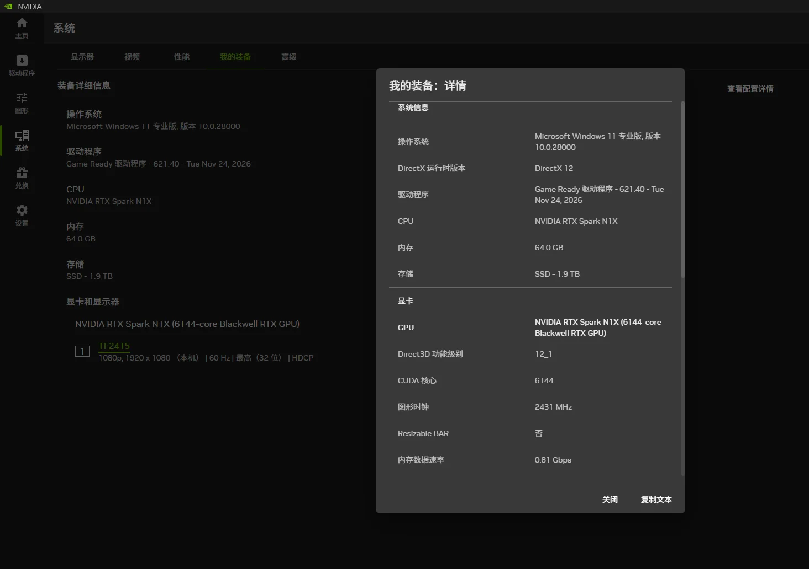
| 分组 | 属性 | 读数 |
|---|---|---|
| 系统信息 | 操作系统 | Microsoft Windows 11 专业版，版本 10.0.28000 |
| 系统信息 | DirectX 运行时版本 | DirectX 12 |
| 系统信息 | 驱动程序 | Game Ready 驱动程序 - 621.40 - Tue Nov 24, 2026 |
| 系统信息 | CPU | NVIDIA RTX Spark N1X |
| 系统信息 | 内存 | 64.0 GB |
| 系统信息 | 存储 | SSD - 1.9 TB |
详情弹窗 · 显卡参数（中段）

| 属性 | 读数 | 说明 |
|---|---|---|
| GPU | NVIDIA RTX Spark N1X（6144-core Blackwell RTX GPU） | 应用以核心数标注型号 |
| Direct3D 功能级别 | 12_1 | 应用报告值；dxdiag 报 12_2，两套口径 |
| CUDA 核心 | 6144 | 与型号中的 6144-core 一致 |
| 图形时钟 | 2431 MHz | 标称图形时钟 |
| Resizable BAR | 否 | 统一内存平台上通常不适用或未启用 |
| 内存数据速率 | 0.81 Gbps | 驱动报告字段，不可与 VRAM 频率 9400 MHz 互算 |
| 内存接口 | N/A | 统一内存架构下不适用，不是“未检测到” |
| 内存带宽 | N/A | 同上 |
| 全部可用的图形内存 | 47709 MB | = 专用 31232 + 共享 16477 |
| 系统视频内存 | N/A | — |
| 共享系统内存 | 16477 MB | 可从系统内存借用 |
| 专用视频内存 | 31232 MB | 即 30.50 GiB |
| 视频 BIOS 版本 | 9a.0b.37.00.04 | — |
| 设备 ID | 10DE 2E13 894C1043 | 厂商 10DE（NVIDIA），子系统 1043（ASUS） |
| 部件编号 | 4242 0010 | — |
| IRQ | 未使用 | 走 MSI 中断 |
| 总线 | PCI Express x1 | 应用原样报告；与 nvidia-smi 的 1×Gen1 当前读数同源 |
统一内存架构没有独立显存的位宽与带宽字段；应用填 N/A 属于如实反映。真正的带宽要看本机微基准，不是这一页。
专用 31232 MB、共享 16477 MB、合计 47709 MB。三者是划分关系而非并列关系，引用时应写明口径。
这是 SoC 内部呈现给驱动的链路信息；官方规格为 PCIe Gen5，设备/主机最大 Gen5。不宜据此推断外接插槽形态。
详情弹窗 · 显示参数（下段）
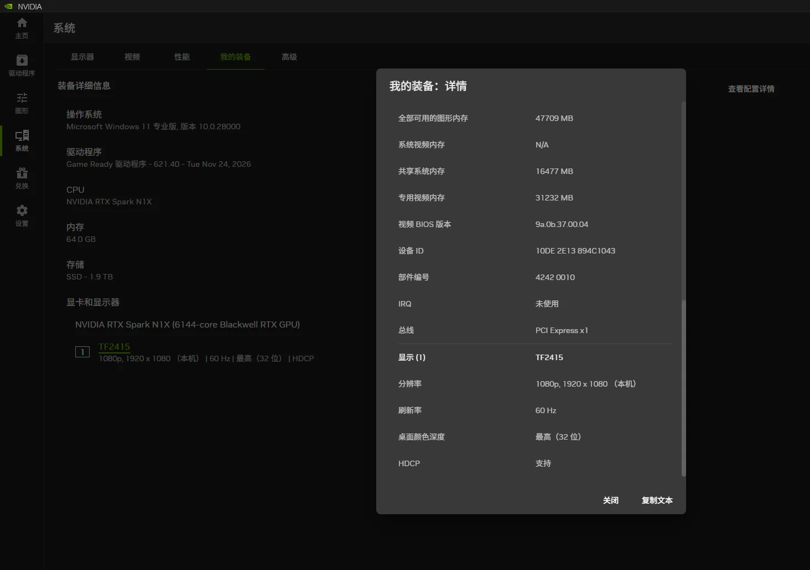
| 属性 | 读数 |
|---|---|
| 显示（1） | TF2415 |
| 分辨率 | 1080p, 1920 × 1080（本机） |
| 刷新率 | 60 Hz |
| 桌面颜色深度 | 最高（32 位） |
| HDCP | 支持 |
“（本机）”标记表示该分辨率为显示器的原生分辨率，当前即以原生分辨率运行；桌面色深 32 位，HDCP 链路已建立，可正常播放受保护内容。
系统 › 显示器：一条 HDMI 电视型链路
“显示器”页把与显示输出相关的全部可调项集中在一处，分为“G-SYNC 及 Surround”与“显示设置”（显示器布局 + 四个可展开项）。
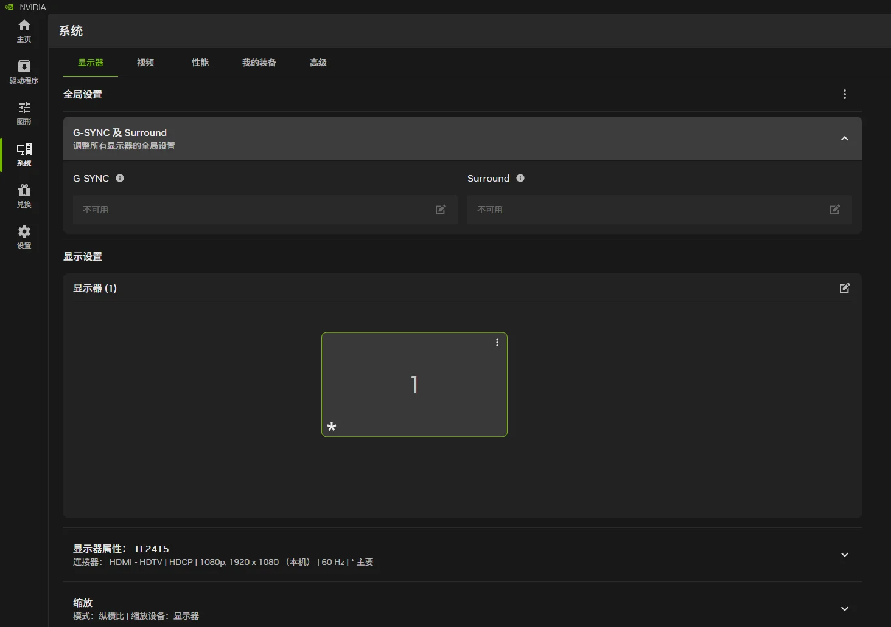
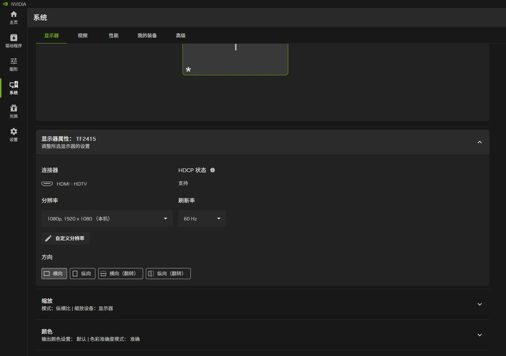
| G-SYNC / Surround | 状态 |
|---|---|
| G-SYNC | 不可用 |
| Surround | 不可用 |
| 显示器属性 | 读数 |
|---|---|
| 连接器 | HDMI - HDTV |
| HDCP 状态 | 支持 |
| 分辨率 | 1080p, 1920 × 1080（本机） |
| 刷新率 | 60 Hz |
| 方向 | 横向（当前选中） |
连接器被识别为“HDMI - HDTV”，即把该显示器按电视类设备处理，这与 G-SYNC 不可用的结论相互印证；分辨率与刷新率均可通过下拉框调整，当前为原生 1080p / 60 Hz。
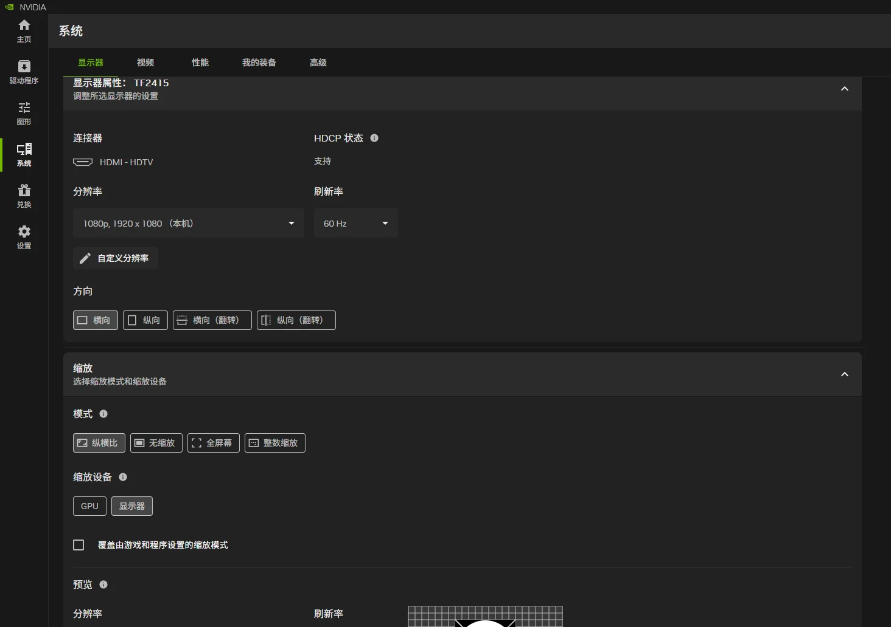
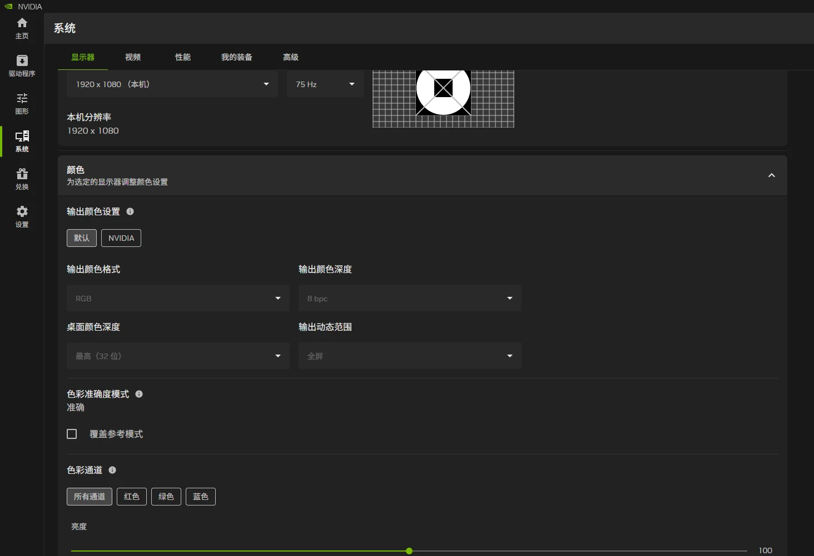
| 缩放 | 当前值 |
|---|---|
| 模式 | 纵横比 |
| 缩放设备 | 显示器 |
| 覆盖游戏/程序设置 | 未勾选 |
| 预览 | 1920 × 1080（本机），75 Hz |
| 本机分辨率 | 1920 × 1080 |
| 颜色 | 读数 |
|---|---|
| 输出颜色格式 | RGB |
| 输出颜色深度 | 8 bpc |
| 桌面颜色深度 | 最高（32 位） |
| 输出动态范围 | 全屏 |
| 色彩准确度模式 | 准确 |
预览区的 75 Hz 不是实际输出。它是预览下拉框的选中项，独立于实际输出；实际输出仍为 60 Hz（见图 1、图 6）。这类“页面里同时出现两个刷新率”的地方，引用时必须写明是哪一个。
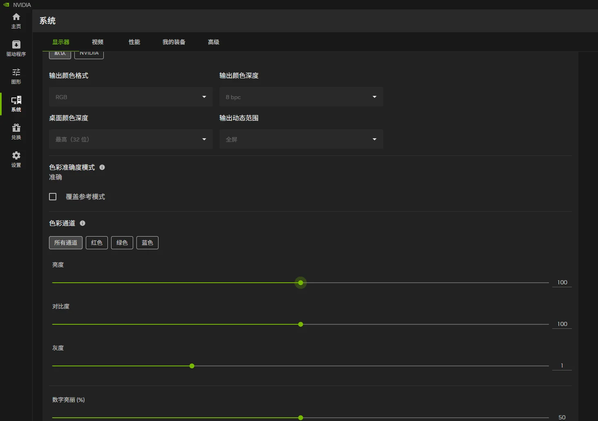
| 属性 | 当前值 | 范围 |
|---|---|---|
| 亮度 | 100 | 0–100 |
| 对比度 | 100 | 0–100 |
| 灰度 | 1 | 0.50–2.00 |
| 数字亮丽（%） | 50 | 0–100 |
四项均为默认状态，未做人工偏色调整；数字亮丽 50% 为应用的中性默认值。
系统 › 视频：RTX 视频增强
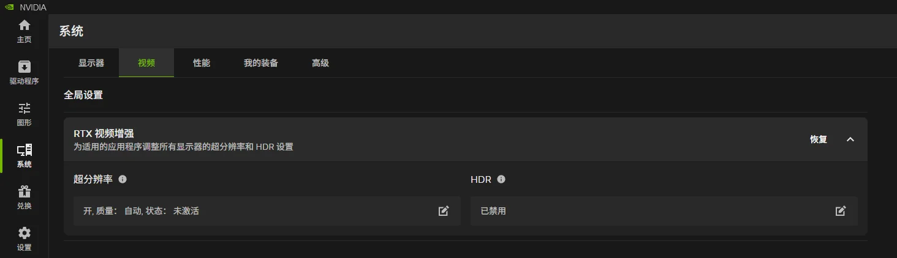
| 属性 | 读数 |
|---|---|
| 超分辨率 | 开，质量：自动，状态：未激活 |
| HDR | 已禁用 |
超分辨率已开启但状态为“未激活”，通常是因为当前没有正在播放的适用视频；该功能在浏览器或播放器中播放视频时才会进入激活状态。HDR 处于禁用状态，与显示器通过 HDMI 接入且系统未开启 HDR 的模式一致。
系统 › 性能：十项瞬时读数
这是整份报告中唯一的动态页面：下表是 12:48:26 这一时刻的瞬时值，重开页面数值会变化，不能当作固定配置项引用。
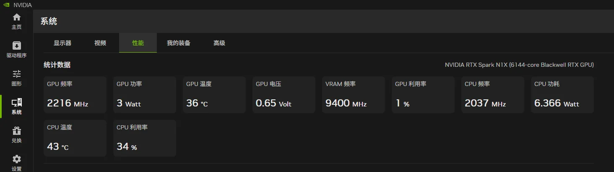
| 传感器 | 读数 |
|---|---|
| GPU 频率 | 2216 MHz |
| GPU 功率 | 3 W |
| GPU 温度 | 36 °C |
| GPU 电压 | 0.65 V |
| VRAM 频率 | 9400 MHz |
| 传感器 | 读数 |
|---|---|
| GPU 利用率 | 1% |
| CPU 频率 | 2037 MHz |
| CPU 功耗 | 6.366 W |
| CPU 温度 | 43 °C |
| CPU 利用率 | 34% |
读数反映的是桌面空闲状态——GPU 利用率 1%、功率 3 W、温度 36 °C，说明显卡处于低负载待机；CPU 利用率 34% 且频率 2037 MHz，属于桌面操作时的常见水平。注意：此页“VRAM 频率 9400 MHz”与详情页“内存数据速率 0.81 Gbps”是两套不同来源的字段，不可互相换算，也不宜直接对比。
时钟字段口径：App 的 2216 MHz 来自另一传感器 / 时钟域；nvidia-smi 同一时刻的 Graphics 221 MHz 才是空闲读数；详情页“图形时钟 2431 MHz”是标称值，3003 MHz 是最大 Boost。不要用 2216 MHz 支撑“低功耗待机”。
系统 › 高级：显存划分的第三个参照点

| 属性 | 读数 |
|---|---|
| GPU 应用优先级 | 默认（可选：前台优先 / 默认 / 后台优先 / 自定义） |
| 后台应用 GPU 利用率 | 20% |
| 前台应用 GPU 利用率 | 80% |
| 专用 GPU 显存（GB） | 30.50 |
| 管理 GPU 性能计数器 | 仅限管理员使用（推荐） |
30.50 GB 与 31232 MB 是同一个数。31,232 MiB ÷ 1024 = 30.50 GiB。应用把 GiB 标成 GB，是常见的界面写法；本站统一写 30.50 GiB，以免与十进制 GB 混淆。
图形：17 项驱动设置全是默认
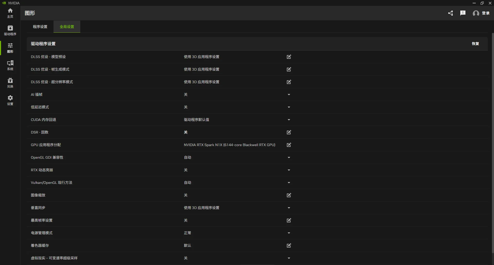
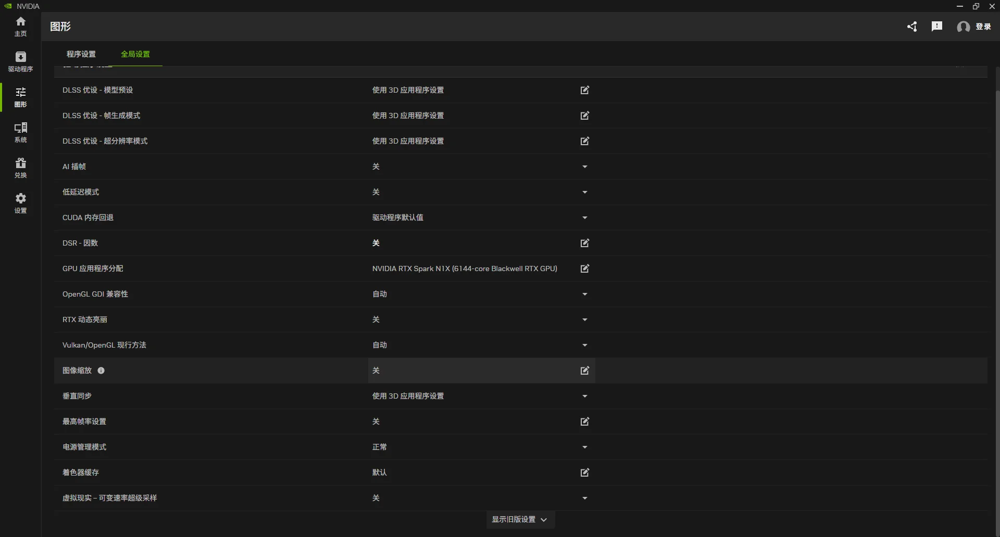
| 设置项 | 当前值 |
|---|---|
| DLSS 优设 - 模型预设 | 使用 3D 应用程序设置 |
| DLSS 优设 - 帧生成模式 | 使用 3D 应用程序设置 |
| DLSS 优设 - 超分辨率模式 | 使用 3D 应用程序设置 |
| AI 插帧 | 关 |
| 低延迟模式 | 关 |
| CUDA 内存回退 | 驱动程序默认值 |
| DSR - 因数 | 关 |
| GPU 应用程序分配 | NVIDIA RTX Spark N1X（6144-core Blackwell RTX GPU） |
| OpenGL GDI 兼容性 | 自动 |
| RTX 动态亮丽 | 关 |
| Vulkan/OpenGL 现行方法 | 自动 |
| 图像缩放 | 关 |
| 垂直同步 | 使用 3D 应用程序设置 |
| 最高帧率设置 | 关 |
| 电源管理模式 | 正常 |
| 着色器缓存 | 默认 |
| 虚拟现实 - 可变速率超级采样 | 关 |
全部 17 项均为出厂默认或“交由 3D 应用程序决定”的状态，没有任何一项被手工改写；这与驱动页显示的已安装版本、图形页没有任何已配置程序（0/0）相互吻合。
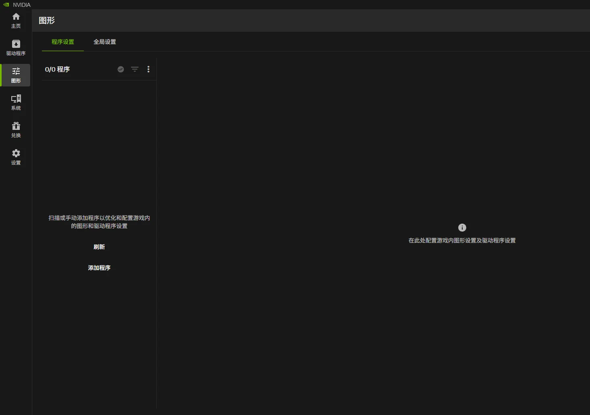
程序列表 0/0 说明什么。本机尚未在 NVIDIA App 中为任何游戏或应用建立单独的优化配置，所有程序都套用全局设置。
这并不等于“不能跑游戏”，只说明应用侧没有做过逐程序调优。本站也没有做游戏帧率测试，因此不对游戏性能下结论。
如果要评测游戏，需要在支持 DLSS 的作品里做帧生成/超分对照，而不是看这一页。
驱动程序：621.40，2026-11-24
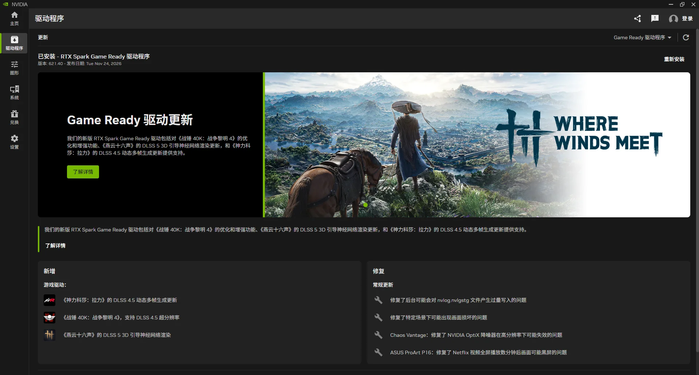
| 属性 | 读数 |
|---|---|
| 已安装驱动 | RTX Spark Game Ready 驱动程序 |
| 版本 | 621.40 |
| 发布日期 | Tue Nov 24, 2026 |
| 更新通道 | Game Ready 驱动程序 |
| 操作 | 重新安装（页面未提供升级按钮，当前已安装即为该版本） |
页面下方的更新说明列出了该版本的主要变更：
- 新增：《神力科莎：拉力》的 DLSS 4.5 动态多帧生成更新；《战锤 40K：战争黎明 4》支持 DLSS 4.5 超分辨率；《燕云十六声》的 DLSS 5 3D 引导神经网络渲染。
- 修复：后台可能会对 nvlog.nvlgstg 文件产生过量写入的问题；特定场景下可能出现画面损坏的问题；Chaos Vantage 中 NVIDIA OptiX 降噪器在高分辨率下可能失效的问题；ASUS ProArt P16 上 Netflix 视频全屏播放数分钟后画面可能黑屏的问题。
更新说明是驱动发布内容，不代表本机实际运行过这些游戏或功能。本站对 DLSS 的结论只到“运行时存在 + API 可用”，没有做游戏内帧率实测。
设置：应用功能与版本
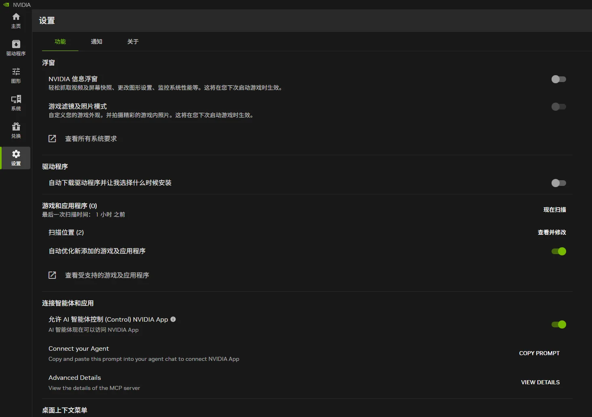
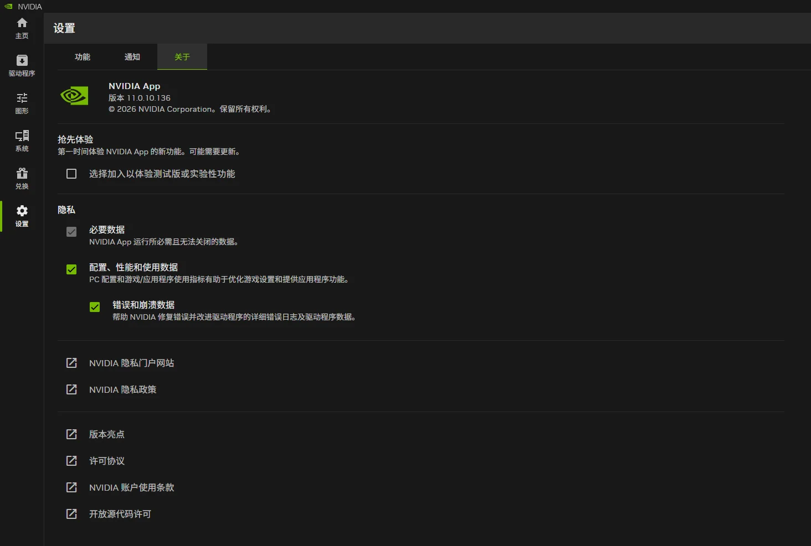
| 分组 | 项目 | 状态 |
|---|---|---|
| 浮窗 | NVIDIA 信息浮窗 | 关 |
| 浮窗 | 游戏滤镜及照片模式 | 关 |
| 驱动程序 | 自动下载驱动并让我选择安装时间 | 关 |
| 游戏和应用程序 | 已扫描程序数 | 0（最后一次扫描：1 小时之前） |
| 游戏和应用程序 | 扫描位置 | 2 处 |
| 游戏和应用程序 | 自动优化新添加的游戏及应用程序 | 开 |
| 连接智能体和应用 | 允许 AI 智能体控制 NVIDIA App | 开 |
| 连接智能体和应用 | Connect your Agent / Advanced Details | 提供 MCP 服务器接入入口 |
驱动自动下载处于关闭状态，因此本机驱动升级需手动触发；游戏扫描位置配置了 2 处但未扫到任何可优化程序，与图 15 的空列表一致。“允许 AI 智能体控制 NVIDIA App”为开启状态，应用因此对外提供 MCP 服务器，允许外部智能体读取与操作其界面。
交叉核对：应用内部、系统侧、三个易误读点
10.1 内部一致性核对
| 核对项 | 来源 A | 来源 B | 结论 |
|---|---|---|---|
| 驱动版本 | 我的装备：621.40 | 驱动程序页：621.40（2026-11-24） | 一致 |
| 专用显存 | 详情页：31232 MB | 高级页：30.50 GB | 一致 |
| 图形内存合计 | 详情页：47709 MB | 31232 + 16477 = 47709 MB | 一致 |
| 显示输出 | 我的装备：1080p / 60 Hz | 显示器属性：1080p / 60 Hz | 一致 |
| CUDA 核心 | 型号标注 6144-core | CUDA 核心字段：6144 | 一致 |
10.2 与系统侧读数的一致性
应用内不显示 CUDA 版本，用系统自带 nvidia-smi 做一次旁证（2026-11-25 12:13 采集）：驱动 621.40、KMD 621.40、CUDA UMD 13.5、专用显存 31232 MiB、总线 0000000F:01:00.0、WDDM 驱动模型。其中驱动版本与显存容量与应用内读数完全对得上；CUDA 13.5 是应用界面未展示、但确实随该驱动安装的组件版本。
两个来源，同一台机器。NVIDIA App 是 GUI 侧读数，nvidia-smi 是驱动侧命令行读数；两者在驱动版本、专用显存、总线当前读数上一致。NVIDIA App 不显示 CUDA 版本，不能反过来用“应用里没有”证明“系统里没有”。
版本字段提示：01/07 的 DLSS 运行时表里出现的 “NVIDIA App 128.4.13.35” 是驱动侧 DLSS 覆盖 / 驱动管理组件版本，不是本页的 NVIDIA App 11.0.10.136；两者不要混为一个字段。
10.3 三个容易误读的点
应用报告的是整机物理内存容量，其中 31232 MB 被划为 GPU 专用视频内存、16477 MB 可在需要时共享给 GPU；Windows 任务管理器看到的可用容量会小于 64 GiB，两者不矛盾。
统一内存架构没有独立显存的位宽与带宽口径，应用填 N/A 属于如实反映。真正的带宽见 04 内存报告的 252 / 233 / 183 GB/s。
Direct3D 功能级别 12_1 是 NVIDIA App 的驱动侧报告值；Windows dxdiag 的 Feature Levels: 12_2 是另一个口径。两者引用时都要写明出处，不要混用成一个数字。
附录 A：详情弹窗原始文本导出
在详情弹窗中点击“复制文本”，应用会输出以下纯文本（未做任何改写，仅去除首尾空行）。它可作为本页表格的原始对照。
NVIDIA 系统信息报告创建于： 11/26/2026 12:46:32 NVIDIA App 版本: 11.0.10.136 操作系统: Microsoft Windows 11 专业版, 版本 10.0.28000 DirectX 运行时版本: DirectX 12 驱动程序: Game Ready 驱动程序 - 621.40 - Tue Nov 24, 2026 CPU: NVIDIA RTX Spark N1X 内存: 64.0 GB 存储: SSD - 1.9 TB 显卡 GPU: NVIDIA RTX Spark N1X (6144-core Blackwell RTX GPU) Direct3D 功能级别: 12_1 CUDA 核心: 6144 图形时钟: 2431 MHz Resizable BAR: 否 内存数据速率: 0.81 Gbps 内存接口: N/A 内存带宽: N/A 全部可用的图形内存: 47709 MB 系统视频内存: N/A 共享系统内存: 16477 MB 专用视频内存: 31232 MB 视频 BIOS 版本: 9a.0b.37.00.04 设备 ID: 10DE 2E13 894C1043 部件编号: 4242 0010 IRQ: 未使用 总线: PCI Express x1 显示 (1): TF2415 分辨率: 1080p, 1920 x 1080 （本机） 刷新率: 60 Hz 桌面颜色深度: 最高（32 位） HDCP: 支持
附录 B 截图清单
| 编号 | 应用内位置 | 采集时间 |
|---|---|---|
| 图 1 | 系统 › 我的装备 | 12:45:57 |
| 图 2 | 我的装备：详情（上：系统信息） | 12:46:06 |
| 图 3 | 我的装备：详情（中：显卡/显存） | 12:46:44 |
| 图 4 | 我的装备：详情（下：显示） | 12:46:50 |
| 图 5 | 系统 › 显示器 › G-SYNC 及 Surround | 12:47:09 |
| 图 6 | 系统 › 显示器 › 显示器属性：TF2415 | 12:47:27 |
| 图 7 | 系统 › 显示器 › 缩放 | 12:47:34 |
| 图 8 | 系统 › 显示器 › 颜色（上） | 12:47:58 |
| 图 9 | 系统 › 显示器 › 颜色（下） | 12:48:07 |
| 图 10 | 系统 › 视频 | 12:48:17 |
| 图 11 | 系统 › 性能 | 12:48:26 |
| 图 12 | 系统 › 高级 | 12:48:38 |
| 图 13 | 图形 › 全局设置（顶部） | 12:49:16 |
| 图 14 | 图形 › 全局设置（底部） | 12:49:26 |
| 图 15 | 图形 › 程序设置 | 12:49:04 |
| 图 16 | 驱动程序 | 12:49:35 |
| 图 17 | 设置 › 功能 | 12:49:49 |
| 图 18 | 设置 › 关于 | 12:50:05 |
全部截图取自同一会话（窗口最大化、100% 显示缩放），除图 13 / 图 14 为同一列表的上下两屏外，其余各图分别对应应用内不同页面或不同展开项，无重复。采集顺序为“图形 › 程序设置 → 图形 › 全局设置”，故图 15 的时间早于图 13、图 14；正文按“全局设置 → 程序设置”的逻辑顺序编排。